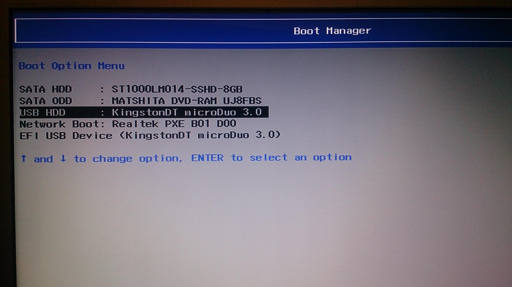

Ubuntu installation alongside windows in legacy mode
By Amr AbdelsalamMotivation
To share experience in installing ubuntu alongside Windows 10, and the corresponding issues of Windows being installed in legacy mode.
Steps
First, have a look at this tutorial.
Here are some extra remarks you should take care of it.
- To know the boot mode restart your lab and enter bios settings (press the right
Fnkey probablyF2before the windows logo appear) then go to boot settings and check the boot mode type. See the image: .
.
- Alternatively, use this link
- If you have an UEFI boot mode take care of this part in the tutorial “In case your hardware uses UEFI then you should modify the EFI settings and disable Secure Boot feature.”
- Make the shrink part from hard 30 Giga not 20 as the tutorial.
- To burn the iso image on the flash memory use Rufus.
- If your boot mode in windows is UEFI then use the UEFI mode in Rufus options. Otherwise, use the Legacy(bios)/UEFI mode.
- Most important note*: the boot mode in windows must match the flash memory boot mode, as Ubuntu will be set up in this mode too.
- Place the USB stick or DVD in the appropriate drive, reboot the machine and instruct the BIOS/UEFI to boot-up from the DVD/USB by pressing a special function key (usually
F12,F10orF2depending on the vendor specifications). - Therefore, after restarting the lab and during after pressing the right
Fnkey the boot manger menu will appear so, if you have UEFI in windows use the USB option that has UEFI/EFI word. If you have Legacy (bios) mode in the windows so choose the USB option without UEFI/EFI word.- The boot manger menu will might look like this: 
- Critical: After the sixth step of the set-up, if you have this error message go back and quit the set up and check the USB boot mode.

- At the eighth step it’s preferable to make a swap part <= 5 Giga and home partition is not a must.
- Important Info: If you are on Legacy mode the allowed number of partitions for both OSs are 4 so make sure that you have only 2 partitions in windows so that you will be able to make the root and swap partitions in Ubuntu.
- If you have 3 or 4 partitions in windows you can merge them safely without losing data using this program (the steps are included).